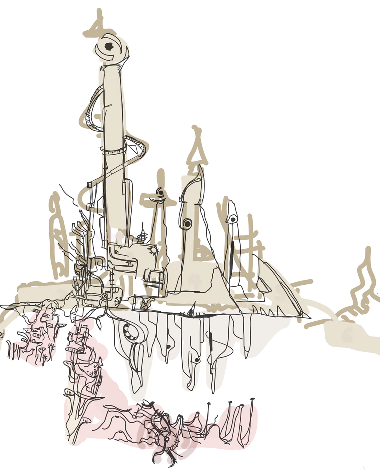
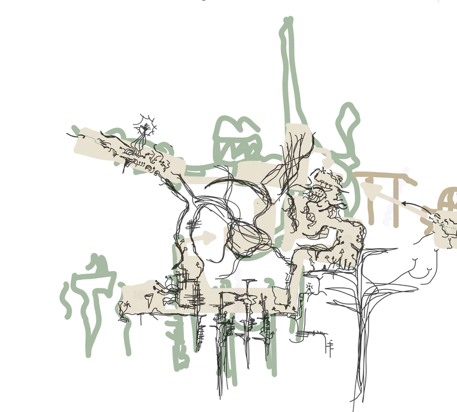
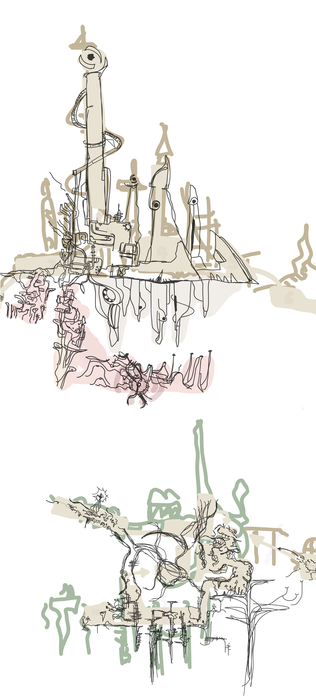

Portfolio
Welcome from Muyi
Critical computation and games today, with projects and photography on the way.
About Me ->
-
Section 01
Critical Computation & Games
Everything from my Critical Computation classes lives here: the five P5JS works from CC Lab, this year's Advanced CC projects in HTML, CSS, JavaScript and APIs, and a few little doors to try.
Enter -> -
Section 02
Projects
Work from projects outside my classes: an olfactory guided tour co-created with botanists at Kunming Botanical Garden, RE:LIVE, a wearable that turns live music into vibration, light and touch for Deaf and hard-of-hearing audiences, Tourgo, a city exploration app for New York, and small hardware games built with Arduino, along with the software tools I build for my own use.
To be continued
-
Section 03
Photography
I picked up a camera about half a year ago. This section will hold the photographs I have taken with it since then.
To be continued


Welcome from
Muyi
Welcome to the CC Lab Final homepage. This is a demonstration page that shows all my works in Critical Computation classes.
This website mainly summarizes all the P5JS tasks I completed last year (almost the year before). I divided them into two parts on average, corresponding to last year's CC and this year's Advanced-CC. CC showcases five works of various sizes and scopes that I completed using P5JS over a period last year, hoping that the new content this year can further enhance my programming skills.
About Me ->Critical
Computation
& Games ->
Everything from my Critical Computation classes lives here: the five P5JS works from CC Lab, this year's Advanced CC projects in HTML, CSS, JavaScript and APIs, and a few little doors to try.
Projects
Work from projects outside my classes: an olfactory guided tour co-created with botanists at Kunming Botanical Garden, RE:LIVE, a wearable that turns live music into vibration, light and touch for Deaf and hard-of-hearing audiences, Tourgo, a city exploration app for New York, and small hardware games built with Arduino, along with the software tools I build for my own use.
To be continued
Photography
I picked up a camera about half a year ago. This section will hold the photographs I have taken with it since then.
To be continued